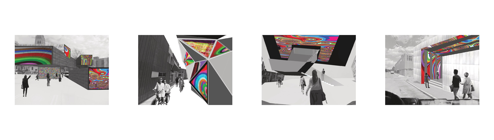
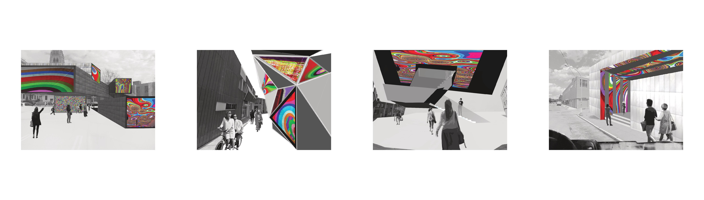

New Media Center
type: architecture
year: 2017
This proposal for the experimental performances and art center is one that embodies the qualities of new media art in its language of construction and poetry of design. New media art is an abstract concept that is constantly being re-defined by definition due to its relative adjective “new”. As technology advances, the boundaries for this area of exploration expand and morph into new understandings of what this art type really means. Correspondingly, the proposed building is one that allows for flexibility in the form of customizable seating arrangements, room sizes, ceiling heights, brightness, and types of lighting, allowing the building to become a blank slate ready to accommodate any new media art in whatever form it may come in.
 
